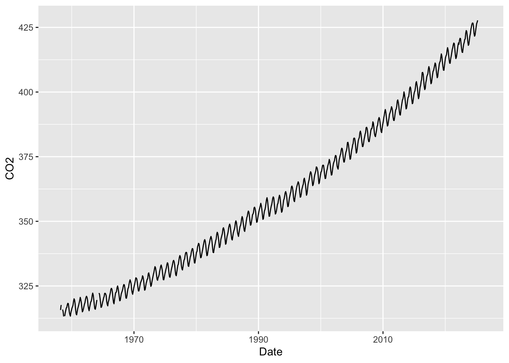
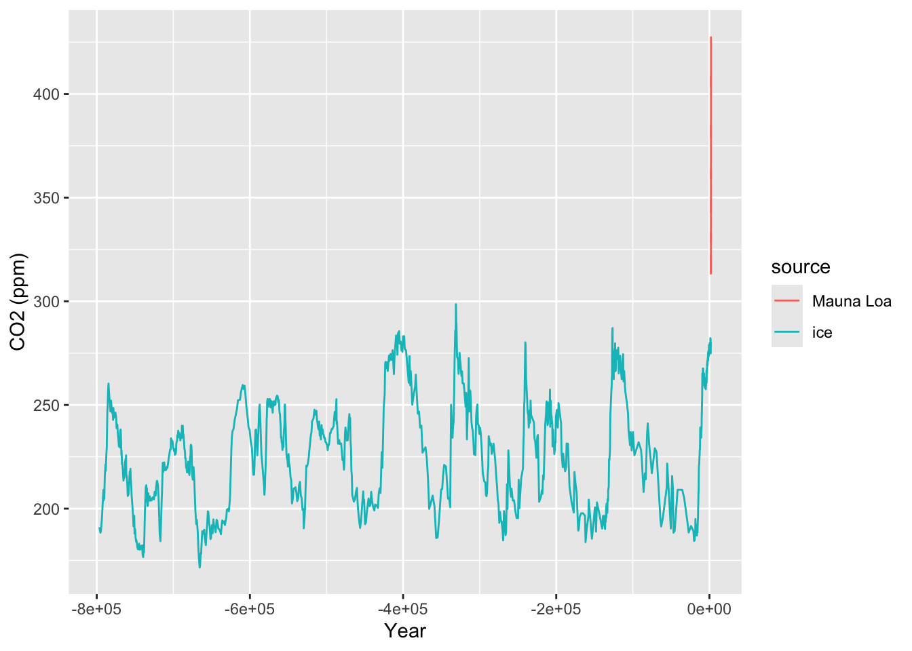
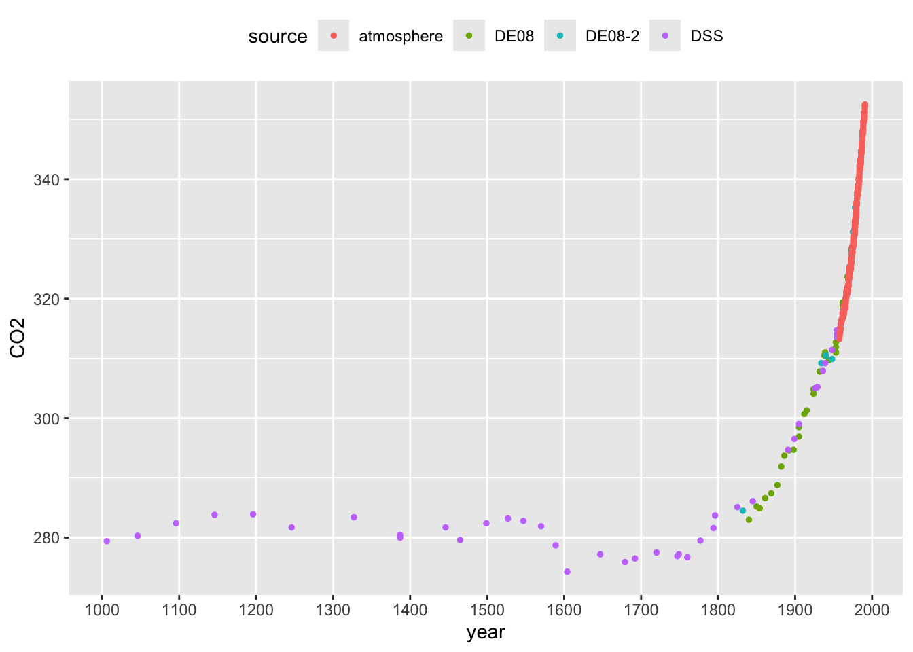
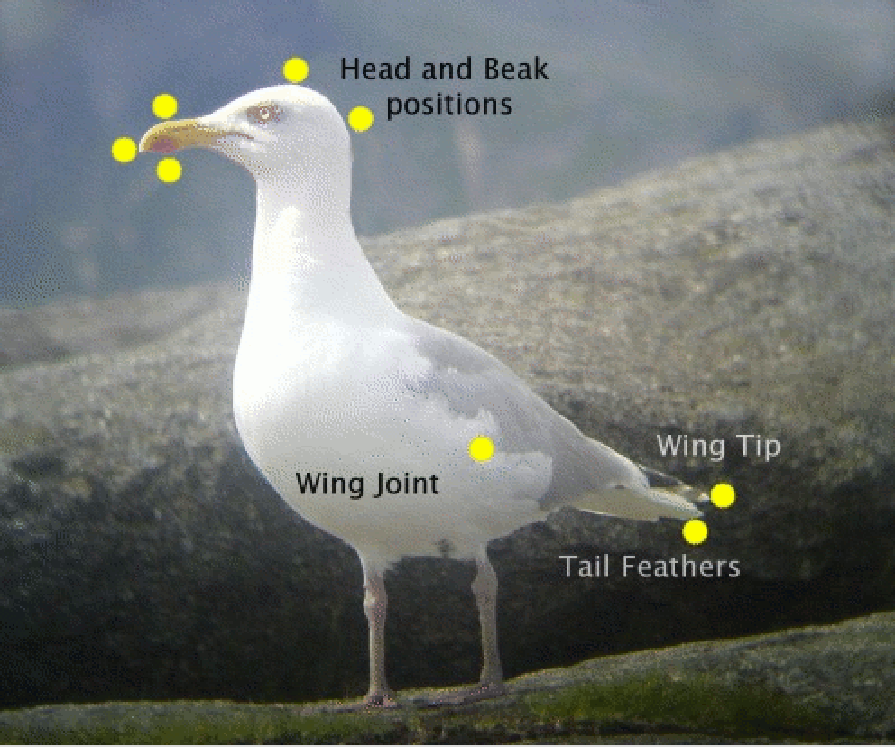

1.1 Some examples of data
1.1.1 CO2 and global warming
One of the world’s most pressing issue is climate change as a result of global warming. The levels of CO2 in the atmosphere are clearly implicated in this as a result of the ‘greenhouse’ effect. Accurate monitoring of CO2 began in the late 1950’s through the pioneering work of Charles David Keeling at Mauna Loa Observatory in Hawaii and measurements have been made continuously since then, providing an invaluable record of change. This ‘time series’ is displayed at monthly resolution in the left hand panel below.

This time series makes it clear that there has been a steady rise in atmospheric CO2 over the entire period of monitoring. The implications of this become startling when we compare the series to data which indicate the levels of CO2 which correspond to earlier historical times. This can be done by measuring the CO2 content of air trapped in ice cores. Careful analysis of the ice layers allow the identification of the time scale, which stretches back over hundreds of thousands of years. The CO2 measurements from ice cores has been superimposed on the plot of the Mauna Loa data in the right hand panel above. This makes it clear that the modern measurements of CO2 are ‘off the scale’ of the historical levels.
In order to assuage any concerns about the comparability between the modern atmospheric and historical ice core CO2 measurements, the plots below focus on the period where these overlap. The left hand plot highlights the sudden dramatic rise in CO2 as the industrial revolution gathered pace. The right hand panel zooms in on the years when both types of measurement are available, indicating the very strong level of agreement between the two.
We will look at corresponding temperature changes later, but these data already paint a stark picture of the nature and size of the challenge we face in addressing climate change. The Intergovernmental Panel on Climate Change synthesises our scientific understanding of the process and continues to report on the current situation, with urgent calls to action.

This example highlights that, in some settings, there is a need for an appropriate control to enable informative comparisons. Controls can sometimes be difficult to identify. In this case, considerable effort has been undertaken to ensure the validity of comparisons with the control data. The example also highlights the relevance of our scientific understanding of the context in which the experiment takes place. The physics of greenhouse gasses is well understood and this allows us to strengthen the interpretation of what we see in the data.
1.1.2 The first tuberculosis trial
One of the very earliest systematic evaluations of medical treatment, marking a significant step in what we now term ‘clinical trials’, was a study on the effects of Streptomycin on pulmonary tuberculosis by Marshall et al. (1948).
The statistician Austin Bradford Hill, whose picture is below, introduced very important methodology in this study. In his review of the development of clinical trials, Bhatt (2010) writes “This trial was a model of meticulousness in design and implementation, with systematic enrolment criteria and data collection compared with the ad hoc nature of other contemporary research. A key advantage of Dr Hill’s randomization scheme over alternation procedure was “allocation concealment” at the time patients were enrolled in the trial. Another significant feature of the trial was the use of objective measures such as interpretation of x-rays by experts who were blinded to the patient’s treatment assignment.”
Figure 1.1: Sir Austin Bradford Hill, Wellcome Collection, CC BY.
The headline results reported in the scientific paper are shown in the table below.
| Radiological assessment | Streptomycin group | Control group |
|---|---|---|
| Considerable improvement | 28 | 4 |
| Moderate or slight improvement | 10 | 13 |
| No material change | 2 | 3 |
| Moderate or slight deterioration | 5 | 12 |
| Considerable deterioration | 6 | 6 |
| Deaths | 4 | 14 |
| Total | 55 | 52 |
The beneficial effects of the treatment are clear and we can have confidence in the conclusion because of the careful conduct of the trial. Key features of the design include the presence of a control group and the use of randomisation.
1.1.3 The birds and the bees: how to tell the sex of a herring gull
Herring gulls are found across the coastal regions of North-Western Europe. When studying the behaviour of these birds, it is useful to be able to identify sex. With this species, this is not possible by visual examination of the obvious anatomical features as the appropriate organs are internal. It would therefore be very useful to be able to identify the sex of a bird by taking simple measurements of some kind, on the assumption that the sexes are lijkely to differn in size, as happens with many animal species. The correct identification of the sex of a herring gull has to be carried out by dissection. The most suitable source of data for this purpose is therefore birds which have been found dead or have been culled for other reasons. Measurements from a sample of 100 male and 100 female birds, kindly provided by Prof. Pat Monaghan from thte University of Glasgow, are available for investigation.

Length measurements, based on the distance between two of the yellow landmarks in the picture above, could be useful in distinguishing between the sexes. as males and females tend to have different sizes in many species. There is an interactive application in R which can help in thinking this through. A gentle introduction to R is provided in Chapter 2 but, if you have followed the guidance at the start of the book on installing R and the add-on package rpanel, then type in the following instructions into the console window to launch the app.
Consider which pairs of landmarks might provide a suitable length measurement. Suitable criteria are:
- reproducible, by yourself and others;
- valid, in what they aim to measure;
- informative, as they are likely to be different for male and females;
- well calibrated, as they target a feature of interest;
- practical, as measurements can be made reasonably easily.
Click on your selected pairs of landmarks and some feedback will be given. If you are able to identify some suitable measurements, checkboxes and buttons will appear to allow you to see some plots of the data, separated out by sex.
1.1.4 Tracking the covid pandemic
When the covid19 pandemic began there was immediate and urgent effort to track its progress. That happened in many ways, most immediately in the numbers of deaths and hospital admissions. In the UK, when tests became available, the number of positive results was also regularly reported. The symptoms data collected by the app from the ZOE Health Study provided another source of information.
Although these sources provided useful information, the most reliable estimates of covid infection levels came from a large survey conducted by the Office of National Statistics (ONS), in partnership with the University of Oxford, the University of Manchester, the UK Health Security Agency (UKHSA) and the Wellcome Trust. Swab and blood samples were provided by thousands of people from across the UK who had been selected and random and who had agreed to participate by providing repeated samples over an extended time period. Statistical modeling was also undertaken to ensure that the results represented the population as a whole.
The ONS provided extensive information about the data, including details of the methods and study design. Scientific publication of the methods appeared in a Lancet paper. This is an example where very considerable effort was made to ensure that what we observe is an accurate representation of what is happening.

The plot above uses the survey data to track the pandemic in terms of the percentage of people in the UK who tested positive. The virulence of the infection changed over time so deaths and hospital admissions show rather different patterns. We will look at data on those later.
An account of the covid-19 tracking project is given in an article published by the Royal Statistical Society in its Statistics Under Pressure series. The hugely valuable nature of the information provided by the ONS survey is discussed in a Conversation article.
1.1.5 More complex data objects
The examples above mostly involve measurements of a single quantity of interest, such as CO\(_2\), the level of health improvement or the proportion of people with covid19. The herring gulls example might involve several different measurements on each bird. However, data can be much more complex. Some examples are:
- high-resolution images captured from a video camera monitoring wildlife movement;
- free-form text entered into the search box of a web browser;
- an extensive set of responses recorded from an individual in a survey, including later questions which are conditional on the responses to earlier questions;
- a network describing the interactions of one individual with others in a group;
- the life history of a hospital patient.
As the complexity of data increases, so the models required for analysis may also need to increase in sophistication. Nonetheless, some basic principles and concepts still apply and it is the aim of this book to discuss these. While the focus is on relatively straightforward types of data, the ideas will provide helpful building blocks for more complex situations.